Galeria

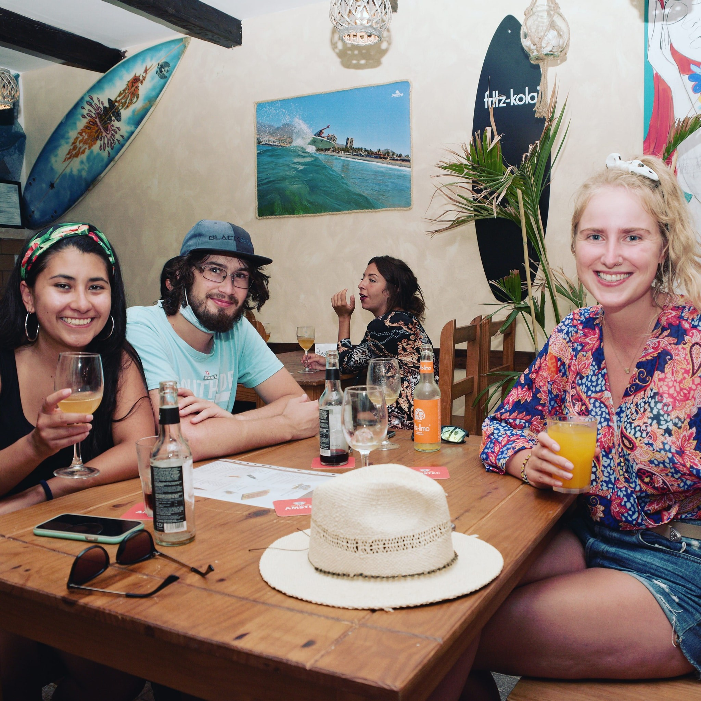
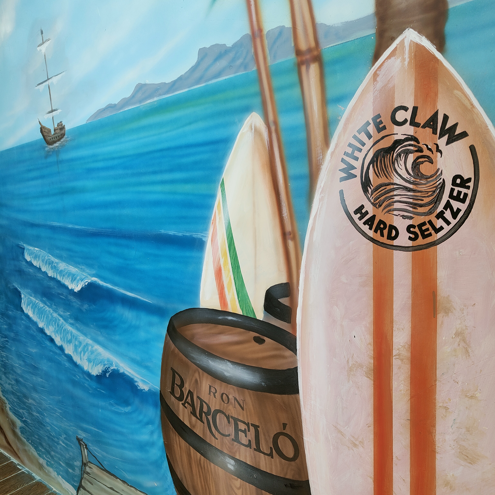
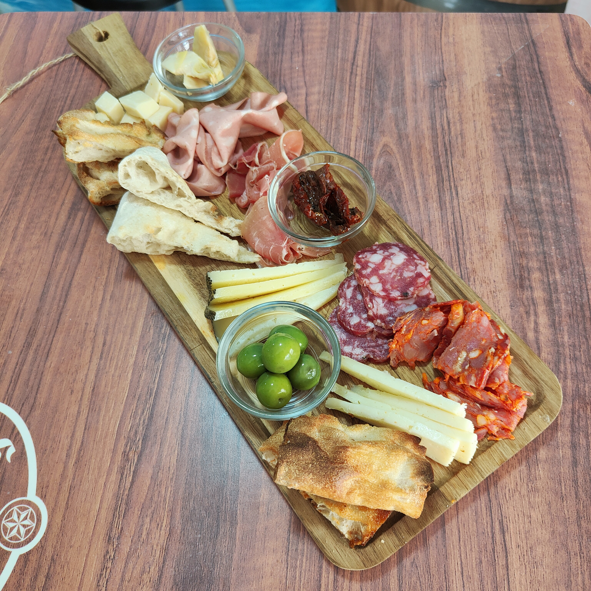
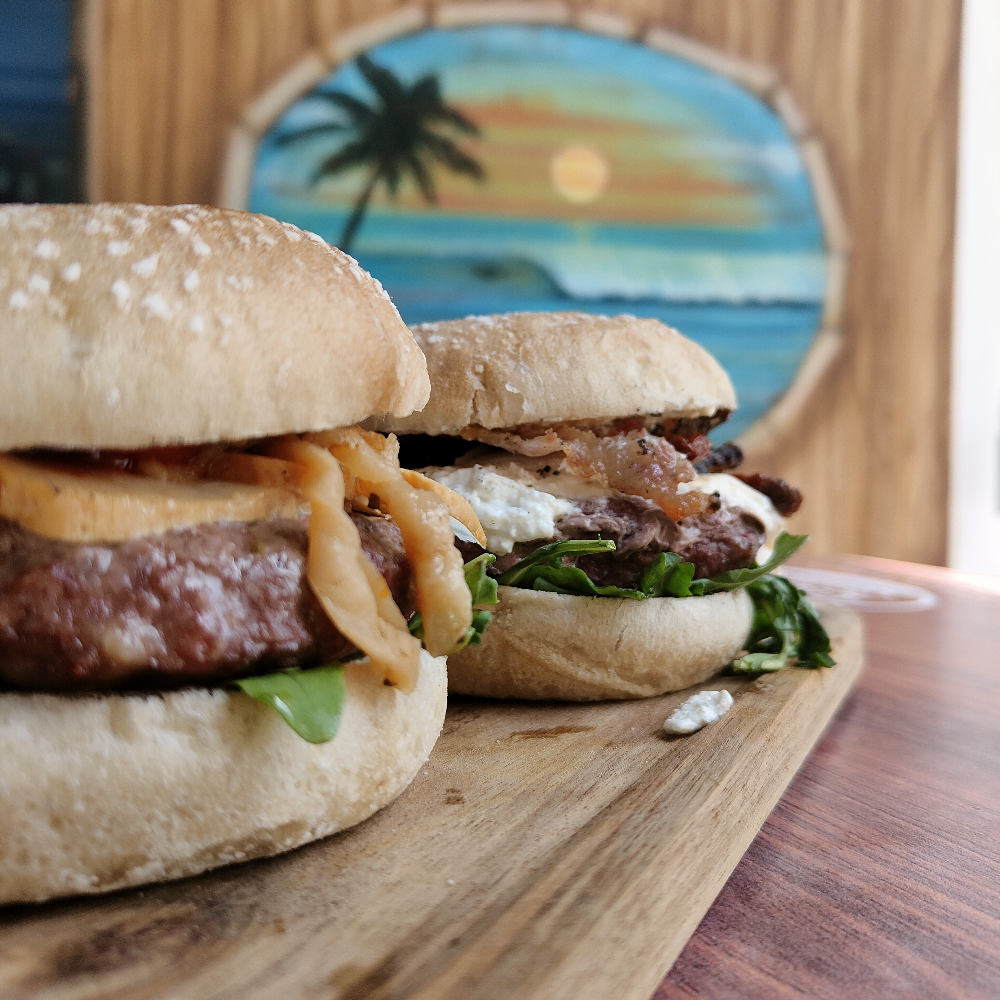
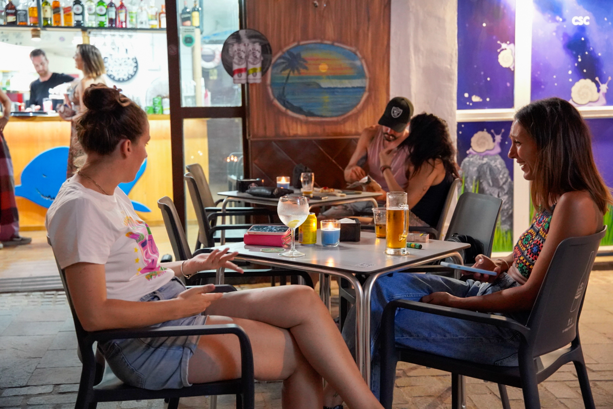
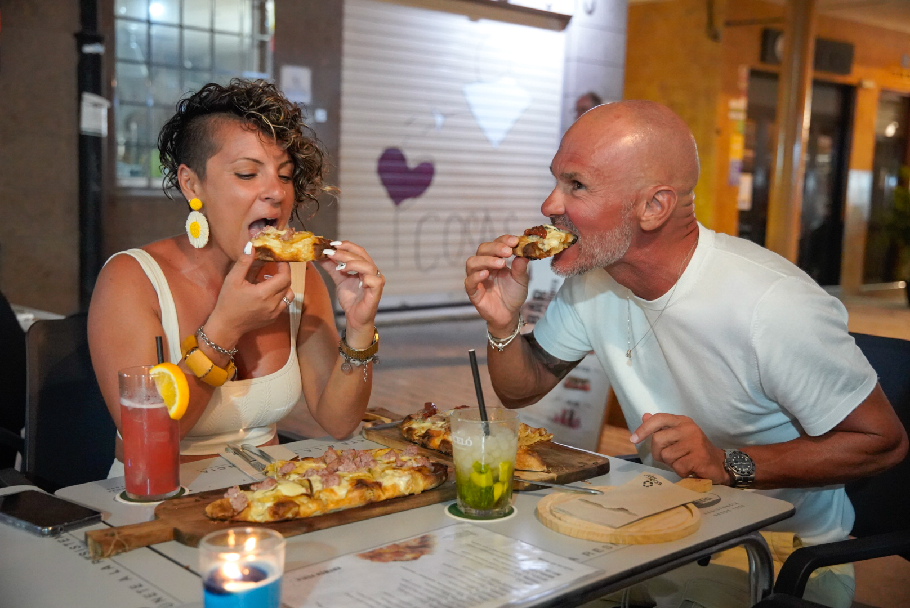
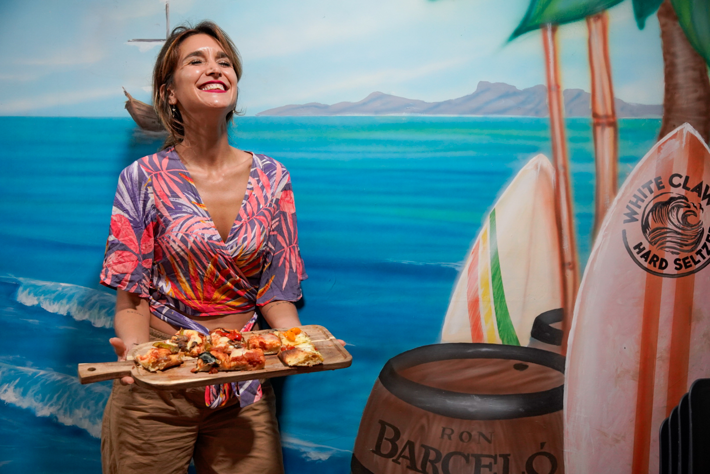
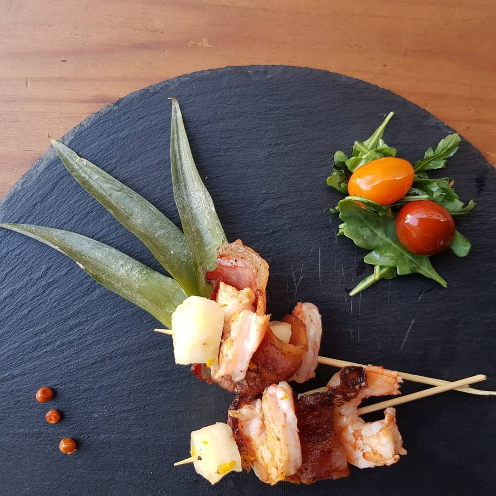
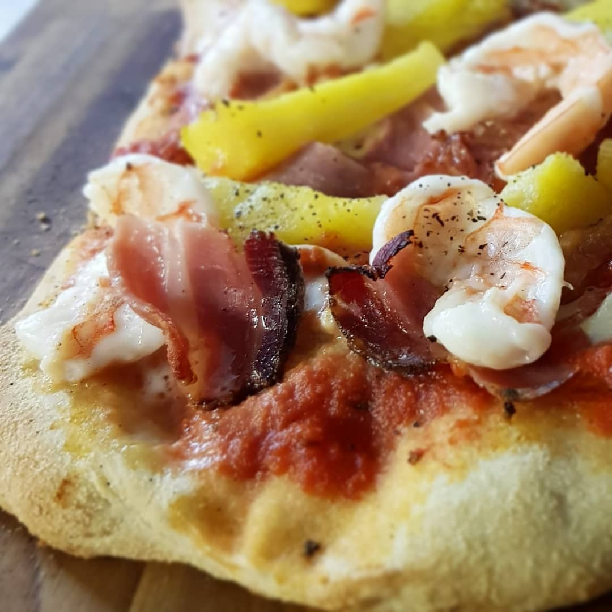
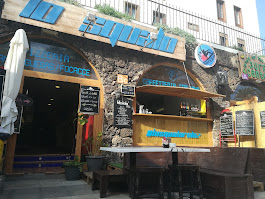
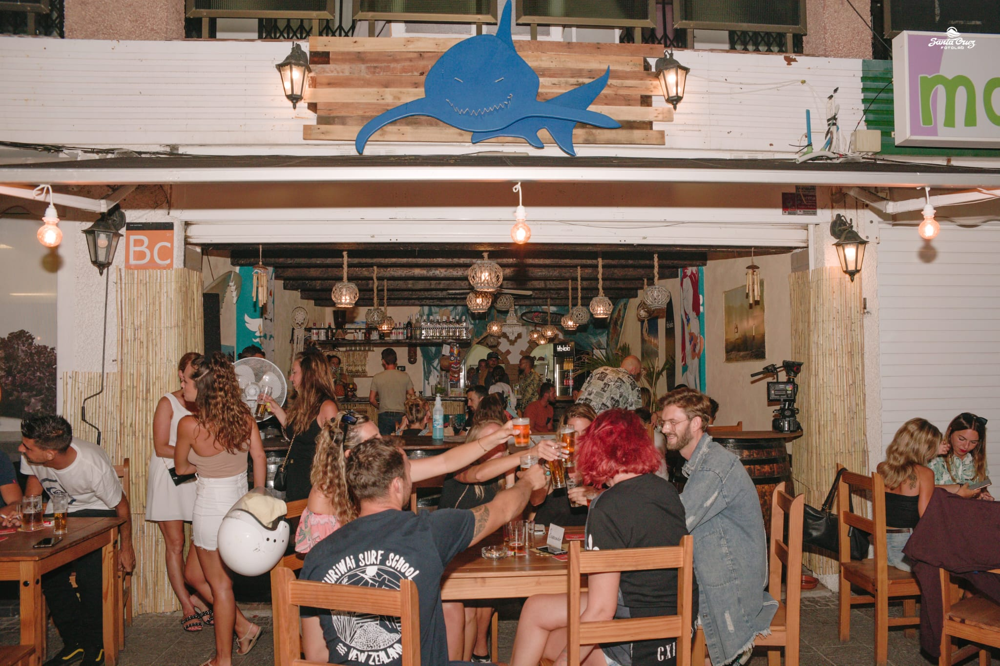
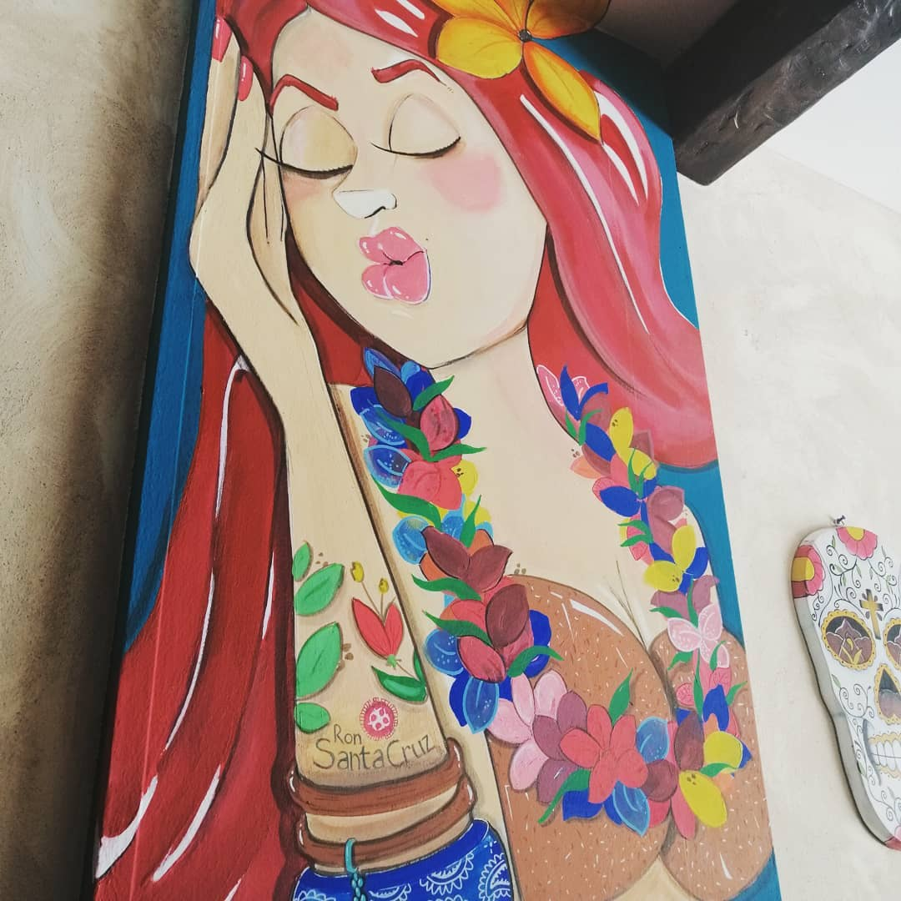
LO SQUALO Surf Bar Franchise es un modelo replicable para activar, reposicionar y hacer rentable un bar o pequeno restaurante con identidad surf, sin empezar de cero. No es una franquicia clasica. No es un formato rigido. Es un sistema de activacion real, construido a partir de experiencia directa en locales, eventos, gestion operativa y marketing aplicado.
Tu local, tu inversion, tu negocio. LO SQUALO entra como partner operativo y de marca, no como propietario. La propiedad y la responsabilidad son tuyas.
Cualquier acuerdo con propietarios, proveedores o licencias lo firmas tu. Nada pasa por LO SQUALO. La transparencia es la base de la relacion.
Identidad visual, sistema operativo, estrategia de marketing y presencia activa en la fase de arranque. Todo lo que se necesita para no improvisar.
Roles definidos desde el primer dia. Sin sorpresas, sin costes ocultos, sin dependencias innecesarias. Una colaboracion con criterio.
Tienes el espacio pero necesitas identidad, sistema y arranque. LO SQUALO entra, evalua y activa el formato mas adecuado para tu situacion concreta.
Estas en fase de busqueda de local. LO SQUALO puede acompanarte desde la seleccion del espacio, con criterios operativos y de viabilidad reales.
Necesitas claridad antes de comprometerte. Organizamos una sesion de trabajo para explicar el modelo, los pasos y lo que implica realmente.
Hablas directo de numeros. Presentamos los rangos de inversion, las condiciones de colaboracion y el retorno esperado segun el tipo de local.











Si suenas con vivir del surf y el sol, el Surf Bar Franchise es tu oportunidad. Un negocio con alma, en uno de los destinos mas atractivos de Europa.
Contactanos para recibir el dossier completo
💬 Contactar por WhatsApp